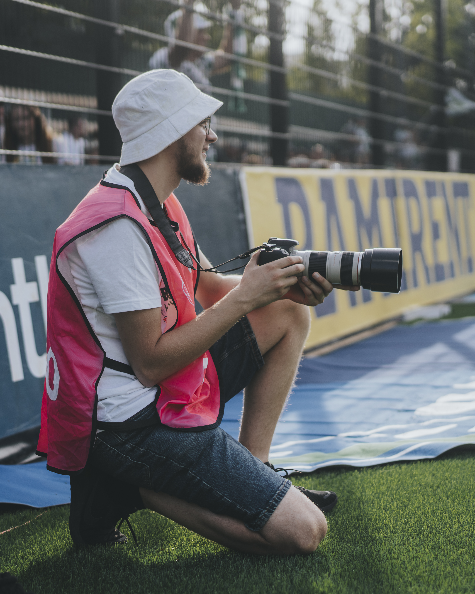

Mitt namn är Ludvig Stokki och jag är frilansande fotograf med huvudfokus på fotboll. Den första matchen jag fotograferade var när Hammarbys damer mötte Celtic i en träningsmatch år 2024. Sedan dess har jag fått äran och chansen att fotografera Allsvenskan, Damallsvenskan, Svenska Cupen, Svenska damlandslaget, internationella vänskapsmatcher samt en del annat.
Fotboll är en stor del av mitt liv, och har funnits med mig sedan jag var liten. Intresset för fotografering kom på senare år, men efter att jag väl plockade upp kameran för första gången så har jag inte kunnat lägga den ifrån mig. Allt började med att jag fotograferade min lillebrors innebandymatcher för skojs skull, och efter det har jag inte kunnat sluta. Än så länge är det här fortfarande bara en hobby, men målet är att så småningom kunna börja ta btalt för mina bilder.